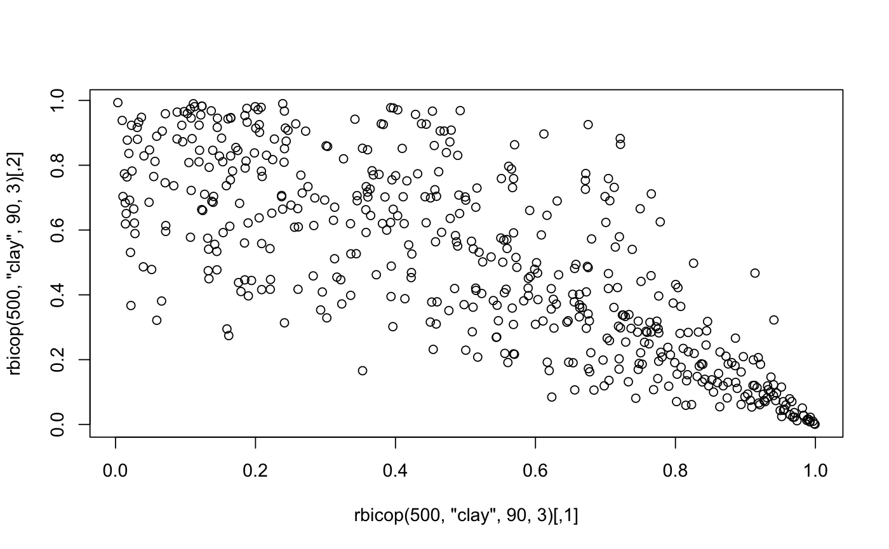
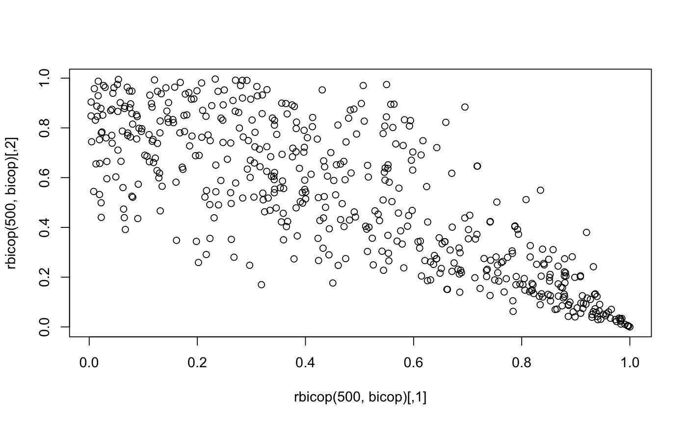

A bivariate copula distribution is specified by:
bicop_dist(family = "indep", rotation = 0, parameters = numeric(0)) dbicop(u, family, rotation, parameters) pbicop(u, family, rotation, parameters) rbicop(n, family, rotation, parameters) hbicop(u, cond_var, family, rotation, parameters, inverse = FALSE)
| family | the copula family, a string containing the family name (see Details for all possible families). |
|---|---|
| rotation | the rotation of the copula, one of |
| parameters | a vector or matrix of copula paramters. |
| u | evaluation points, either a length 2 vector or a two-column matrix. |
| n | number of observations. If `length(n) > 1``, the length is taken to be the number required. |
| cond_var | either |
| inverse | whether to compute the h-function or its inverse. |
An object of class bicop_dist.
A numeric vector containing the value of the (inverse) h-function.
The implemented families listed below. Partial matching is activated, i.e.,
"gauss" is equivalent to "gaussian".
indepIndependence copula.
gaussianGaussian copula.
tStudent t copula.
claytonClayton copula.
gumbelGumbel copula.
frankFrank copula.
joeJoe copula.
bb1BB1 copula.
bb6BB6 copula.
bb7BB7 copula.
bb8BB8 copula.
tlltransformation kernel local likelihood, should only be used with
data, see bicop().
H-functions (hbicop()) are conditional distributions derived from a copula.
If \(C(u, v) = P(U \le u, V \le v)\) is a copula, then
$$h_1(v | u) = P(U \le u | V = v),$$
$$h_2(u | v) = P(V \le v | U = u).$$
The evaluation functions can optionally be used with a bicop_dist object,
e.g., dbicop(c(0.1, 0.5), bicop_dist("indep")).
## bicop_dist objects bicop_dist("gaussian", 0, 0.5)#> Bivariate copula ('bicop_dist'): family = gaussian, rotation = 0, parameters = 0.5str(bicop_dist("gauss", 0, 0.5))#> List of 4 #> $ family : chr "gaussian" #> $ rotation : num 0 #> $ parameters: num [1, 1] 0.5 #> $ npars : int 1 #> - attr(*, "class")= chr "bicop_dist"bicop <- bicop_dist("clayton", 90, 3) ## evaluate the copula density dbicop(c(0.1, 0.2), "clay", 90, 3)#> [1] 0.04843628dbicop(c(0.1, 0.2), bicop)#> [1] 0.04843628## evaluate the copula cdf pbicop(c(0.1, 0.2), "clay", 90, 3)#> [1] 0.0001978703## simulate data plot(rbicop(500, "clay", 90, 3))plot(rbicop(500, bicop))## h-functions joe_cop <- bicop_dist("joe", 0, 3) # h_1(0.2 | 0.1) hbicop(c(0.1, 0.2), 1, "bb8", 0, c(2, 0.5))#> [1] 0.2436951# h_2(0.1 | 0.2) hbicop(c(0.1, 0.2), 2, joe_cop)#> [1] 0.1906421# h_1^{-1}(0.2 | 0.1) hbicop(c(0.1, 0.2), 1, "bb8", 0, c(2, 0.5), inverse = TRUE)#> [1] 0.1629181# h_2^{-1}(0.1 | 0.2) hbicop(c(0.1, 0.2), 2, joe_cop, inverse = TRUE)#> [1] 0.05221261